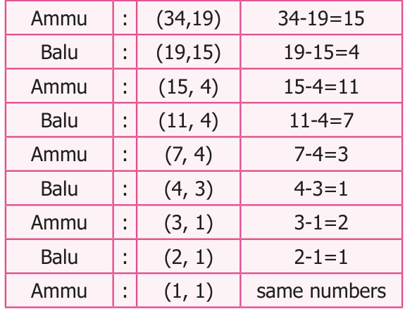

<!DOCTYPE html>
<html lang="en">
<head>
<meta charset="UTF-8">
<meta name="viewport" content="width=device-width,initial-scale=1">
<title>5.3 Euclid’s game — Information Processing</title>
<meta name="description" content="Class 6 Mathematics · Term 3 · Information Processing · 5.3 Euclid’s game">
<link rel="icon" href="data:image/svg+xml,<svg xmlns='http://www.w3.org/2000/svg' viewBox='0 0 100 100'><text y='.9em' font-size='90'>📘</text></svg>">
<link rel="stylesheet" href="../../../assets/book.css">
<link rel="stylesheet" href="https://cdn.jsdelivr.net/npm/katex@0.16.11/dist/katex.min.css" crossorigin="anonymous">
</head>
<body>
<header class="topbar">
<div class="topbar-in">
  <div class="crumb">
    <span class="c1"><a href="../../../index.html">Library</a> · <a href="../../index.html">Class 6 Mathematics · Term 3</a></span>
    <span class="c2">Information Processing · 5.3 Euclid’s game</span>
  </div>
  <a class="tb-btn" data-nav="prev" href="../../05-information-processing/02-iterative-process-in-numbers-5.2/index.html" title="5.2 Iterative Process in Numbers">←</a>
  <details class="drawer"><summary class="tb-btn" title="Sections in this chapter">☰</summary>
<div class="drawer-panel"><div class="dh">Information Processing</div><a href="../01-introduction-5.1/index.html">5.1 Introduction</a><a href="../02-iterative-process-in-numbers-5.2/index.html">5.2 Iterative Process in Numbers</a><a href="../03-euclid-s-game-5.3/index.html" aria-current="page">5.3 Euclid’s game</a><a href="../04-following-and-devising-algorithms-5.4/index.html">5.4 Following and Devising Algorithms</a><a href="../05-arranging-things-and-putting-them-in-order-5.5/index.html">5.5 Arranging things and putting them in order</a><a href="../06-exercise-5.1/index.html">Exercise 5.1</a><a href="../07-exercise-5.2/index.html">Exercise 5.2; Miscellaneous Practice problems</a><a href="../08-summary/index.html">Summary</a></div></details>
  <a class="tb-btn" data-nav="next" href="../../05-information-processing/04-following-and-devising-algorithms-5.4/index.html" title="5.4 Following and Devising Algorithms">→</a>
  <button class="tb-btn" data-theme-toggle title="Toggle light / dark" aria-label="Toggle light or dark theme">◐</button>
</div>
<div class="progress"><span style="width:82.6%"></span></div>
</header>
<main class="wrap">
<div class="sec-head">
  <p class="eyebrow"><a href="../index.html">Chapter 5 · Information Processing</a></p>
  <h1>5.3 Euclid’s game</h1>
  <p class="sec-meta">Textbook pages 4–5 · 3 figures</p>
</div>
<article class="prose">
<p>Ammu and Balu are playing a game. Each one can choose any number and they write it down on a piece of paper. If Ammu picks up the number greater than what Balu picked up, then Ammu will find the difference of the two numbers. That difference will be shown to Balu. Now Balu takes the chance to find the difference between the number what he has and the number shown to him by Ammu. They will continue the process until the difference and the numbers they have become equal. Finally, the person who gets the number equal to the difference wins the game Let us see how it works</p>
<figure class="fig table-fig"></figure>
<p>Suppose Ammu picked the number 34 and Balu picked the number 19. Ammu first finds the difference between 34 and 19 which gives 15. She shows the difference to Balu. Now Balu has 19 and she has 15, the difference is 4. He shows to Ammu and so on. (the bigger number should be kept first to find the difference). So Ammu wins.</p>
<figure class="fig side-fig"></figure>
<p>Now suppose they start with Ammu (24, 18).</p>
<p>Ammu Balu Ammu It goes: (24, 18) (18, 6) (12, 6) (6, 6). Ammu wins again! If they start with Ammu (18, 6), we get (18, 6) (12, 6) (6, 6) Balu wins!</p>
<p>Play the game with your friends and see for which pairs of numbers the first player (Ammu ) wins, and when the second player wins.</p>
<p>Now we can notice something interesting! Begin with any pair of numbers. Can you say anything about the pair of numbers. Remember that we stop the process when both the numbers are same. It is the Highest Common Factor (HCF) of the two numbers we started with. So what we have seen here is an iterative process which leads us to the HCF of two given numbers. The HCF of a and b (here a&gt;b) is the same as for a and a-b.</p>
<h4 class="callout-h" id="s-example-1">Example 1</h4>
<p>Find the HCF of two numbers 16 and 28.</p>
<h4 class="callout-h" id="s-solution">Solution</h4>
<p>Now the HCF of 16,28 Now the HCF of (16 , 28-16)</p>
<div class="mathblock"><p>\(16 = 2 x 2 x 2 x 2 16 = 2 x 2 x 2 x 2 28 = 2 x 2 x 7 12 = 2 x 2 x 3\)</p></div>
<p>HCF of (16, \(28) = 2 x 2 = 4 HCF\) of (16, \(12) = 2 x 2 = 4\) Therefore HCF of (16, \(28) = HCF\) of (16, 28-16). Hence, HCF of two numbers a and b, \(a &gt; b\), is same as the HCF of a and \(a - b\).</p>
<p>Euclidean algorithm</p>
<p>Let us take a number 12. If we divide 12 by 7 then, we get quotient=1, remainder=5 and 12 can be</p>
<div class="mathblock"><p>written as \(12 = (1 x 7) + 5\).</p></div>
<p>If we divide 12 by 2 then, we get quotient=6, remainder=0 and 12 can be</p>
<div class="mathblock"><p>written as \(12 = (2 x 6) + 0\).</p></div>
<p>From this, we observe that, if a number ‘a’ is divided by some number ‘b’ then we get the quotient ‘q’ and remainder ‘r’, and ‘a’ can be written in a unique way as \(a =\) (b x q) \(+ r\). That is, Dividend = (Divisor x Quotient) + Remainder. This is called the Euclidean algorithm.</p>
</article>
<nav class="pager"><a class="" data-nav="prev" href="../../05-information-processing/02-iterative-process-in-numbers-5.2/index.html"><span class="dir">← Previous</span><span class="t">5.2 Iterative Process in Numbers</span><span class="ch">Information Processing</span></a><a class="nx" data-nav="next" href="../../05-information-processing/04-following-and-devising-algorithms-5.4/index.html"><span class="dir">Next →</span><span class="t">5.4 Following and Devising Algorithms</span><span class="ch">Information Processing</span></a></nav>
</main><footer class="site">Generated from the source textbook PDFs · text, figures and exercises belong to their respective publishers.</footer><script defer src="https://cdn.jsdelivr.net/npm/katex@0.16.11/dist/katex.min.js" crossorigin="anonymous"></script>
<script defer src="https://cdn.jsdelivr.net/npm/katex@0.16.11/dist/contrib/auto-render.min.js" crossorigin="anonymous"
  onload="renderMathInElement(document.body,{delimiters:[
    {left:'\\(',right:'\\)',display:false},
    {left:'$$',right:'$$',display:true},
    {left:'\\[',right:'\\]',display:true}],throwOnError:false,ignoredTags:['script','noscript','style','textarea','pre','code']})"></script>
<script src="../../../assets/book.js"></script>
</body>
</html>
